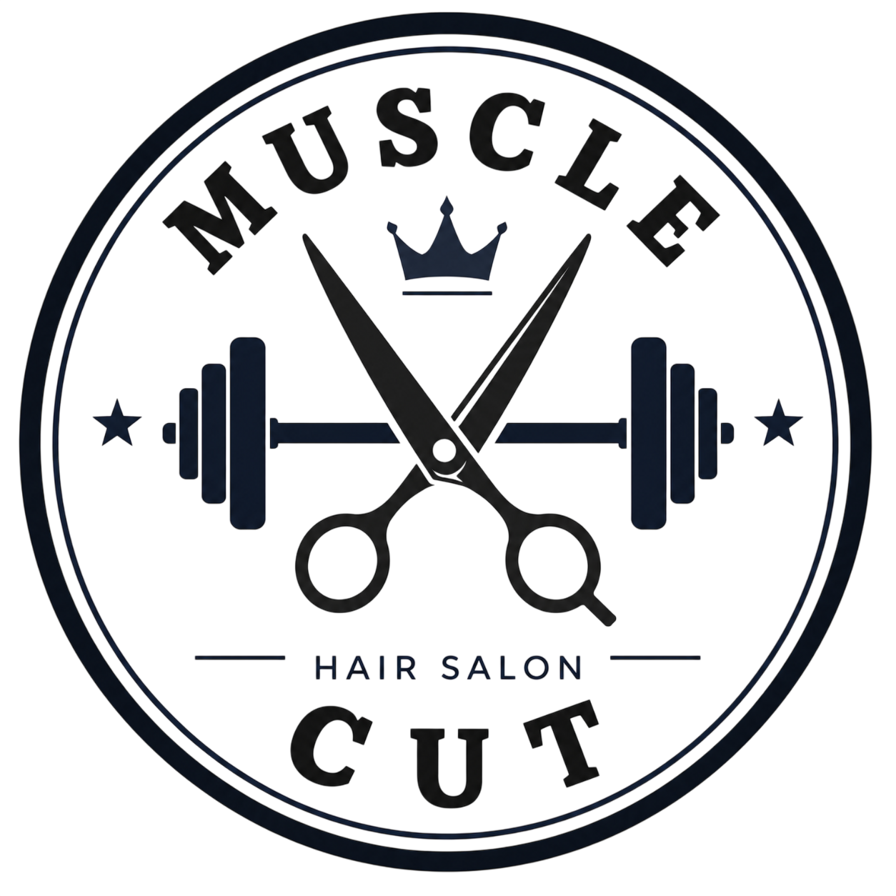
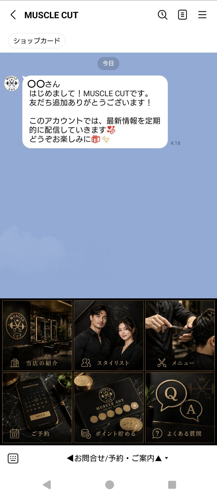
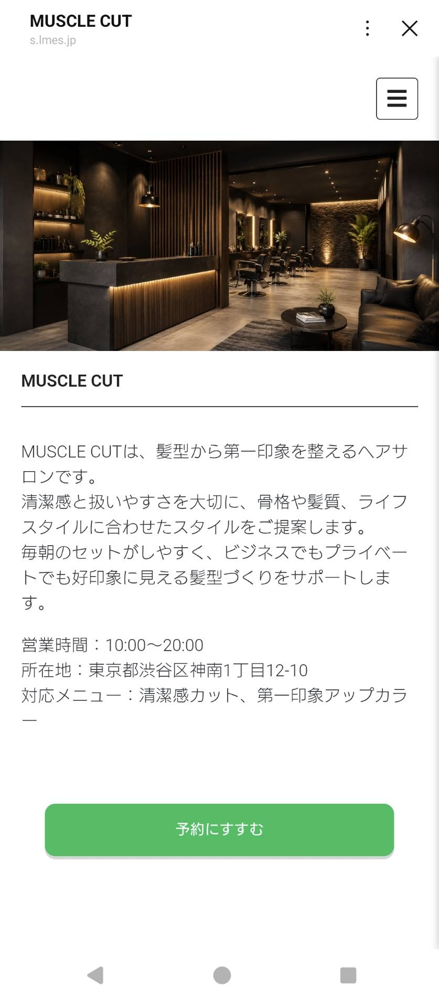
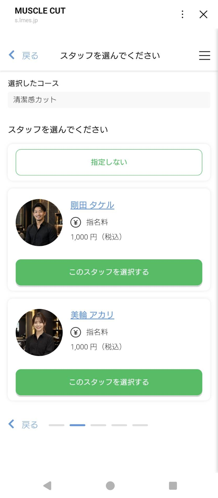
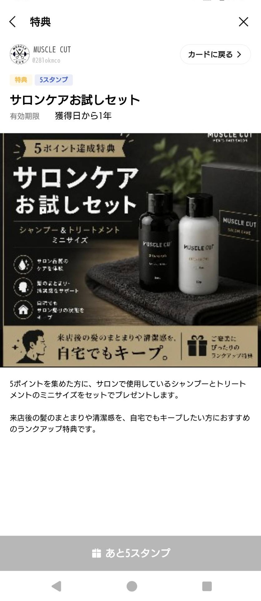

01 / LINE DESIGNCONCEPT SALON — CASE STUDY
MUSCLE
CUT↗
髪型から、第一印象を鍛えるヘアサロン。
架空のヘアサロン公式LINE / 導線設計・コピー・LINE構築

01PURPOSE / TARGET
店舗やサービスを知り、予約へ迷わず進めること。来店後もポイント特典を通じて、継続して利用できる接点を用意した。
清潔感や第一印象を整えたい20〜30代の男性会社員・営業職・接客業を想定。
02CONCEPT / コンセプト
髪型から、第一印象を鍛えるヘアサロン。
「MUSCLE CUT」という強い名称を、髪型から第一印象を整えるコンセプトへ。黒とゴールドを中心に、高級感と男性向けの力強さを両立した。
03LINE EXPERIENCE
必要な情報と予約の入口を、
リッチメニューに。
友だち追加直後のメッセージとともに、主要な機能を一画面に整理。店舗の情報を知りたいときも、予約したいときも、目的の入口を見つけやすくした。

04RESERVATION FLOW
店舗・サービスを確認して予約へ進み、希望のスタッフを選択。実際の2画面で、予約の入口からスタッフ選択までの流れを紹介する。
01店舗・サービスを確認

02スタッフを選択

05POINT CARD / BENEFIT

5スタンプ
サロンケアお試しセット
ポイントを貯めることで、シャンプーとトリートメントのミニサイズを受け取れる仕組みを用意。予約だけで終わらず、再来店や継続利用につながる接点を設けた。
来店→ポイント→特典
06DESIGN POINT / 工夫した点
強い名称を、髪型から第一印象を整えるコンセプトへ落とし込み、黒・ゴールドで高級感と力強さを表現した。
必要な情報へ迷いにくいリッチメニューと予約導線を整理。ポイント特典によって、来店後にも利用する理由を用意した。
07ROLE / 担当範囲
ターゲット設計 / コンセプト設計 / LINE導線設計 / リッチメニュー設計 / 予約導線 / ポイント施策 / コピー / 構築 / 動作確認・改善